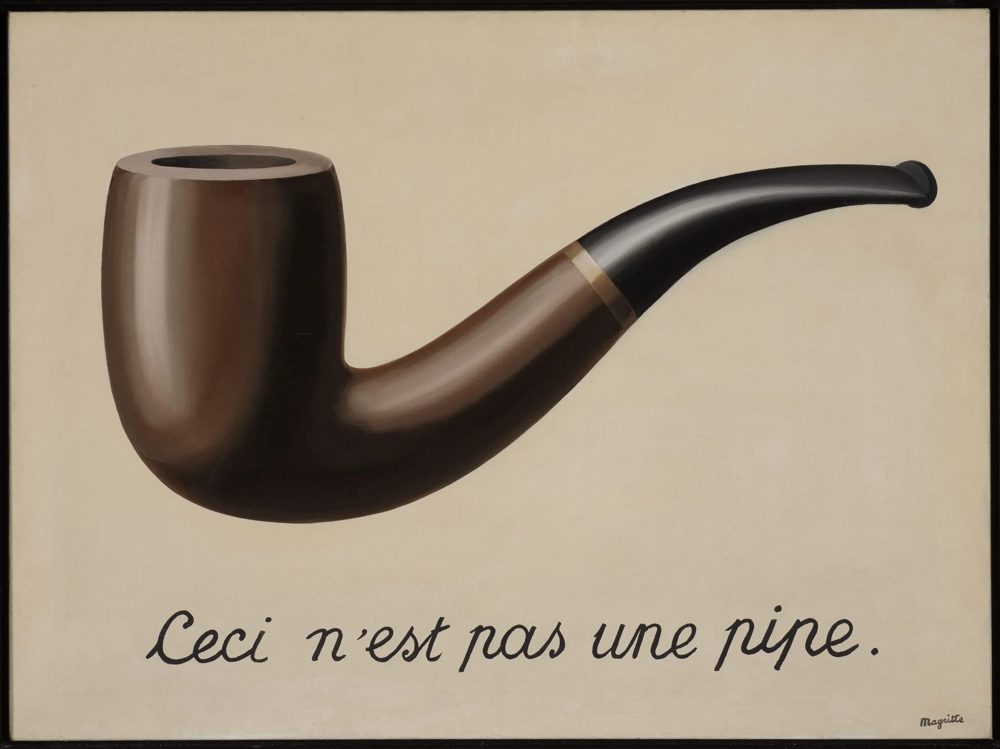
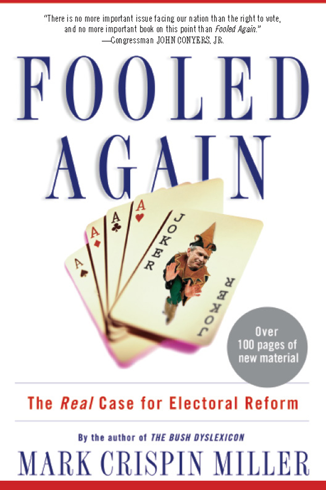
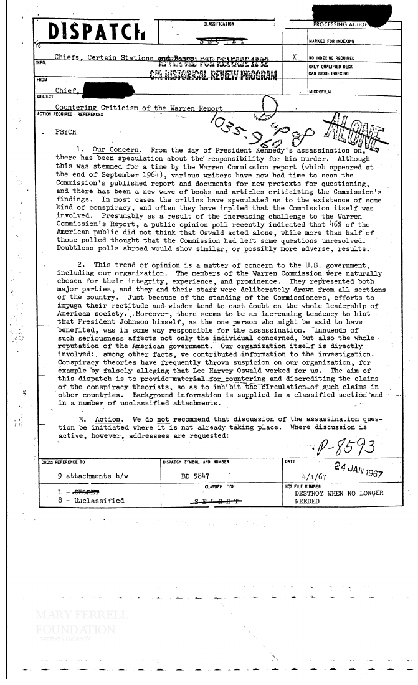
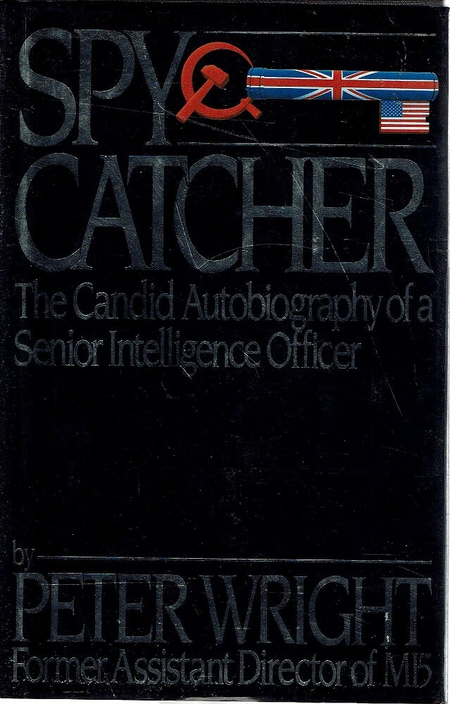
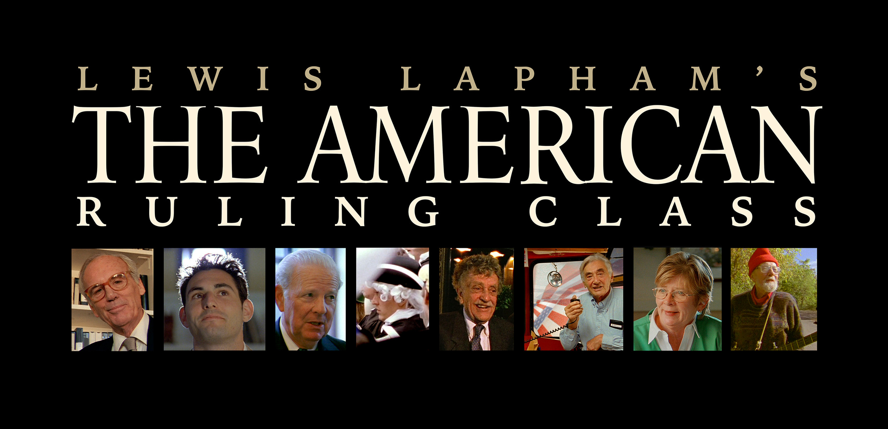

33:50 · 13 OPERE
L'antidemocrazia contro l'individuo.
Il filo del discorso
Caldarella riprende un precedente intervento sull’articolo di Tim Foyle per discutere l’uso della parola cospirazione come espediente che interrompe il confronto. Attraverso esempi quotidiani distingue il dissenso verbale dalla confutazione fondata su ragioni e prove, poi collega questa distinzione alla libertà intellettuale dell’individuo. Mark Crispin Miller e Fooled Again introducono il problema della ricezione pubblica di una tesi controversa; il relatore precisa di non aver letto il libro e di non poter giudicare la ricostruzione elettorale. La parte centrale esamina un dispaccio della CIA sulle critiche al rapporto Warren, richiama Popper e ricorda il procedimento Spycatcher e le domande di Bertrand Russell sull’assassinio di Kennedy. La documentazione citata permette di discutere strategie di comunicazione, ma non dimostra ogni ipotesi evocata; è inoltre inesatta l’attribuzione al documento del 1967 dell’invenzione dell’espressione conspiracy theory. Nella conclusione, il discorso si sposta dal potere politico alle relazioni personali: il film di Lapham e Kirby, il richiamo ad Adorno e l’allusione a Huxley sostengono la critica di una vita ridotta al vantaggio e al controllo. L’uomo nuovo descritto da Caldarella è una figura della trasformazione interiore, non una nuova specie biologica; il rifiuto di Bartleby chiude l’appello a conservare relazioni disinteressate e capacità di giudizio.
I libri nel discorso
On the Psychology of the Conspiracy Denier
Illustrazione dell’articolo online: OffGuardian · articolo online · 12 marzo 2021
Illustrazione fotografica associata all’articolo dalla pagina originale. Non è una copertina libraria e non contiene il titolo del testo.
Il precedente articolo di Tim Foyle è richiamato espressamente; non ne viene qui ripetuta una lettura integrale.
Passaggio 0:02 ↗ · Fonti e libro ↗
Giulio Cesare
Copertina: Feltrinelli · Universale Economica I Classici · 2013
Copertina autentica dell’edizione di riferimento, non attribuita all’esemplare del video.
Giulio Cesare di Shakespeare nominato; l’allusione alla ragione fuggita fra le bestie richiama Antonio, atto III scena 2.
Passaggio 1:26 ↗ · Fonti e libro ↗
La trahison des images (Ceci n’est pas une pipe)
Riproduzione del dipinto: RIPRODUZIONE DEL DIPINTO The Treachery of Images, 1929, olio su tela, Los Angeles County Museum of Art, inventario 78.7. Acquisto con fondi della collezione Mr. and Mrs. William Preston Harrison. Non è una copertina libraria.
Immagine autentica LACMA, intera: pipa dipinta, iscrizione Ceci n’est pas une pipe e firma Magritte. Copyright indicato dal museo: © C. Herscovici/Artists Rights Society (ARS), New York. Non viene dichiarata una licenza libera.
Magritte e la pipa con la negazione scritta sono espliciti: identificazione del dipinto La trahison des images.
Passaggio 4:05 ↗ · Fonti e libro ↗
Fooled Again
Copertina: Basic Books, edizione ampliata 2007. La copertina autentica reca il sottotitolo The Real Case for Electoral Reform e segnala oltre cento pagine nuove. È distinta dalla prima edizione 2005, ISBN 9780465045792, e dal sottotitolo originario mantenuto nella pagina editoriale. La scheda digitale dell’editore associa ISBN 9780465007684 alla pubblicazione del 12 giugno 2007; il medesimo identificatore denomina il file immagine. Non è accertata l’edizione mostrata nel video.
Copertina della versione ampliata 2007, non della prima edizione 2005. Identificatore del file editoriale e dell’ebook: 9780465007684; non attribuito automaticamente all’esemplare cartaceo fotografato.
Miller, titolo deformato Full Again e Basic Books; il relatore dichiara di non conoscere direttamente libro e vicenda elettorale.
Passaggio 8:05 ↗ · Fonti e libro ↗
Countering Criticism of the Warren Report
Prima pagina del dispaccio: PRIMA PAGINA DEL DISPACCIO, riprodotta dalla pagina 3 del PDF archivistico, dopo due pagine descrittive. Sono visibili il titolo, la sigla di dispaccio BD5847, l’annotazione manoscritta 1035-960, la data dattiloscritta 4/1/67 e il timbro 24 JAN 1967. Si conserva la discordanza materiale delle date; la scheda archivistica indica 4/1/1967. Filigrana Mary Ferrell Foundation. Non è una copertina libraria.
Facsimile della prima pagina effettiva, pagina 3 del PDF; schede di catalogo escluse dall’immagine. Date e annotazioni riprodotte senza correzioni.
Documento CIA del 1967, titolo tradotto relativo alle critiche del rapporto Warren e formula Destroy when no longer needed.
Passaggio 13:11 ↗ · Fonti e libro ↗
Report of the President’s Commission on the Assassination of President John F. Kennedy
Copertina: Government Printing Office, Washington, 1964. Fotografia della legatura originale blu scuro con sigillo dorato, esemplare The Henry Ford 2013.51.1, immagine THF230053, dono di Kathleen Glynn Seymour. Il titolo è registrato sul dorso nella scheda museale, non stampato sul piatto anteriore visibile. Il rapporto fu presentato il 24 settembre 1964; i 26 volumi di testimonianze e prove furono pubblicati il 23 novembre. La fotografia non rappresenta l’intera serie.
Fotografia museale del piatto anteriore dell’esemplare 1964; sigillo visibile, titolo sul dorso riscontrato nel catalogo. Nessuna attribuzione dell’esemplare al video.
Rapporto Warren esplicito; quantità dei volumi confusa nel parlato. Distinto dai 26 volumi delle audizioni.
Passaggio 13:42 ↗ · Fonti e libro ↗
La società aperta e i suoi nemici
Copertina: Armando Editore · Classici · 2018 · volume unico
Copertina autentica di riferimento, controllata visivamente. L’edizione non è identificata come quella usata nel video.
Titolo inglese The Open Society and Its Enemies esplicito.
Passaggio 18:11 ↗ · Fonti e libro ↗
Congetture e confutazioni. Lo sviluppo della conoscenza scientifica
Copertina: il Mulino, Biblioteca paperbacks, 2009, 736 pagine, ISBN 9788815128041; copertina verde con foglio accartocciato. Originale inglese Conjectures and Refutations, Routledge & Kegan Paul, 1963. L’edizione italiana illustrata non è attribuita al video.
Immagine autentica dell’opera, controllata visivamente; l’edizione di riferimento non è attribuita al filmato.
Titolo italiano e anno originale 1963 espliciti.
Passaggio 18:11 ↗ · Fonti e libro ↗
Spycatcher. The Candid Autobiography of a Senior Intelligence Officer
Identificazione probabile
Copertina: William Heinemann Australia, Richmond, ristampa indicata come 1988, 392 pagine, ISBN 9780855610982. Copertina nera con titolo argenteo e figura di pistola composta da simboli sovietici e bandiere britannica e statunitense. La scheda del libraio contiene anche un richiamo alla prima edizione 1987: l’anno della ristampa è conservato come dato del singolo esemplare, senza attribuirlo a tutte le edizioni. Originale 1987; l’edizione Viking ha un ISBN differente.
Immagine autentica dell’opera, controllata visivamente; l’edizione di riferimento non è attribuita al filmato.
Il nome Spycatcher Trial identifica probabilmente il libro oggetto della controversia, senza una sua lettura.
Passaggio 20:20 ↗ · Fonti e libro ↗
Sixteen Questions on the Assassination
Fotografia dell’opuscolo: FOTOGRAFIA DELL’OPUSCOLO che riproduce l’articolo apparso in The Minority of One, settembre 1964, pagine 6–8. Il foglio fotografato reca titolo, autore e indicazione della ristampa dal numero di settembre; copyright 1964 The Minority of One. Non è una copertina di raccolta successiva e non si assegna un giorno preciso alla pubblicazione.
Fotografia integrale del fronte dell’opuscolo, con indicazione della rivista originaria; non copertina di un volume autonomo.
Bertrand Russell e Sixteen Questions on the Assassination espliciti.
Passaggio 24:22 ↗ · Fonti e libro ↗
The American Ruling Class
Identificazione probabile
Immagine promozionale del film: IMMAGINE PROMOZIONALE DEL FILM: testata orizzontale del sito ufficiale con titolo e scene del film. Opera presentata nel 2005; edizione educativa Bullfrog del 2007. Le durate 100, 95 e 89 minuti si riferiscono a diverse schede o versioni, non sono fuse in un unico dato. I due giovani di Yale sono personaggi di finzione in un film che combina satira e incontri con persone reali.
Testata ufficiale orizzontale, non locandina verticale o copertina libraria. Titolo identificato come probabile dal contenuto del racconto.
Lapham, documentario circa 2005 e due giovani di Yale: identificazione probabile del film, titolo non pronunciato.
Passaggio 26:32 ↗ · Fonti e libro ↗
Il mondo nuovo
Identificazione probabile
Copertina della raccolta: Mondadori · Oscar Moderni · 2016
L’immagine mostra il volume Mondadori che riunisce Il mondo nuovo e Ritorno al mondo nuovo. Il collegamento nel video riguarda il primo romanzo, per allusione al titolo inglese; non identifica un’edizione usata dal relatore.
Huxley richiamato nell’esempio dei figli selezionati: allusione probabile, titolo non pronunciato.
Passaggio 30:42 ↗ · Fonti e libro ↗
Bartleby lo scrivano
Copertina della raccolta: Bompiani · Bartleby lo scrivano e altri racconti · 2018
Copertina della raccolta Bompiani che contiene Bartleby lo scrivano. Non è presentata come copertina di un’edizione autonoma del racconto né come l’esemplare citato nel video.
Nome Bartleby e formula Preferirei di no espliciti; non è lettura del racconto.
Passaggio 33:34 ↗ · Fonti e libro ↗Minutaggi ricavati da testi automatici, da riascoltare. Le identificazioni probabili sono segnalate accanto ai libri.